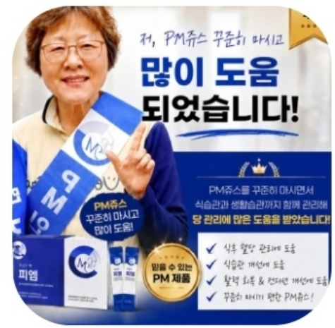
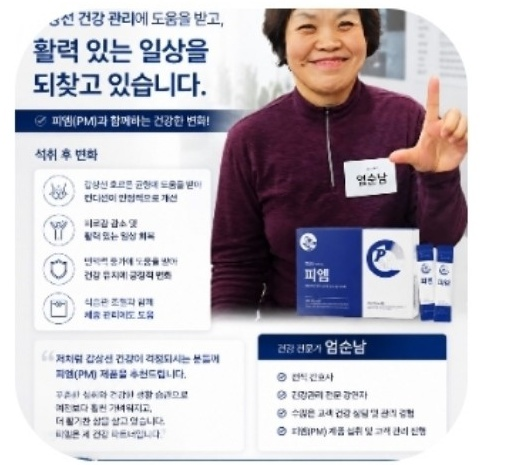
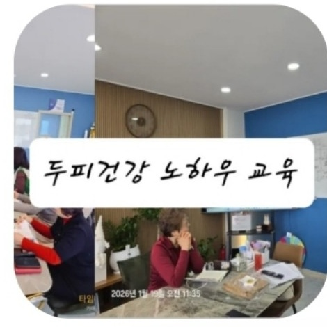
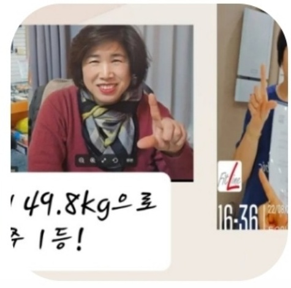
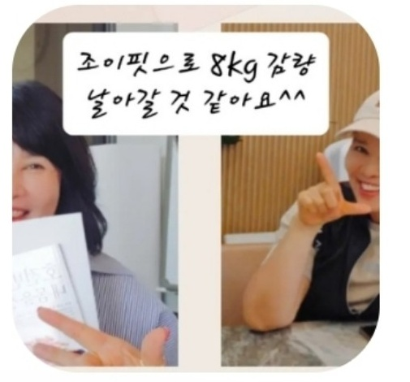

사례 1 · 임○○
건강 → 사업 → 리더 성장시작 전갱년기가 심해서 관심
시작 계기가족의 소개
변화건강 · 사업 · 성장
현재본업이 되어 리더로 성장
“건강 때문에 시작했는데 이제 제 삶 전체가 달라졌어요.”
한 번의 구매로 끝나는 소비가 아니라
배우고, 경험하고, 나누면서 성장하는 소비
사람마다 시작한 이유는 달랐습니다. 건강, 소비, 소득, 새로운 도전. 하지만 배우고 경험하면서 삶의 방향이 달라졌다는 공통점이 있습니다.
실제 경험을 바탕으로 한 사례입니다. 개인별 경험과 결과에는 차이가 있을 수 있습니다.




